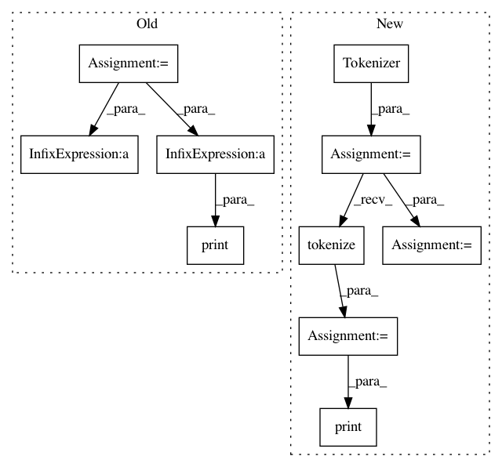

2df9a66ac40d1017792b1c93f34e47e214726d7d,demo/load_model/load_and_pool.py,,,#,9
Before Change
model = keras.models.Model(inputs=model.inputs, outputs=pool_layer)
model.summary(line_length=120)
tokens = ["[CLS]", "语", "言", "模", "型", "[SEP]"]
token_dict = {}
with codecs.open(dict_path, "r", "utf8") as reader:
for line in reader:
token = line.strip()
token_dict[token] = len(token_dict)
token_input = np.asarray([[token_dict[token] for token in tokens] + [0] * (512 - len(tokens))])
seg_input = np.asarray([[0] * len(tokens) + [0] * (512 - len(tokens))])
print("Inputs:", token_input[0][:len(tokens)])
predicts = model.predict([token_input, seg_input])[0]
print("Pooled:", predicts.tolist()[:5])
After Change
token = line.strip()
token_dict[token] = len(token_dict)
tokenizer = Tokenizer(token_dict)
text = "语言模型"
tokens = tokenizer.tokenize(text)
print("Tokens:", tokens)
indices, segments = tokenizer.encode(first="语言模型", max_len=512)
predicts = model.predict([np.array([indices]), np.array([segments])])[0]
print("Pooled:", predicts.tolist()[:5])
In pattern: SUPERPATTERN
Frequency: 3
Non-data size: 10
Instances
Project Name: CyberZHG/keras-bert
Commit Name: 2df9a66ac40d1017792b1c93f34e47e214726d7d
Time: 2019-03-18
Author: CyberZHG@gmail.com
File Name: demo/load_model/load_and_pool.py
Class Name:
Method Name:
Project Name: shibing624/pycorrector
Commit Name: 5c58bbd49d94b38a7b70a836ae91f537f7dded7b
Time: 2019-12-31
Author: xuming624@qq.com
File Name: pycorrector/seq2seq_attention/infer.py
Class Name:
Method Name:
Project Name: CyberZHG/keras-bert
Commit Name: 2df9a66ac40d1017792b1c93f34e47e214726d7d
Time: 2019-03-18
Author: CyberZHG@gmail.com
File Name: demo/load_model/load_and_extract.py
Class Name:
Method Name: